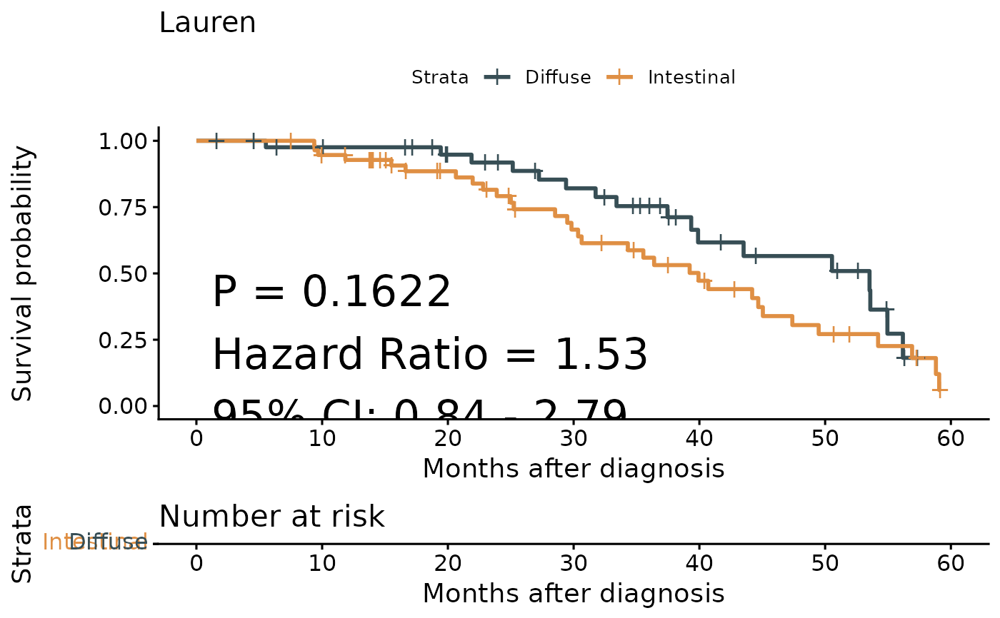

Creates Kaplan-Meier survival plots for data grouped by a categorical variable. Handles both binary and multi-level categorical groups with customizable plot aesthetics.
Usage
surv_group(
input_pdata,
target_group,
ID = "ID",
levels = c("High", "Low"),
reference_group = NULL,
project = NULL,
time = "time",
status = "status",
time_type = "month",
break_month = "auto",
cols = NULL,
palette = "jama",
mini_sig = "score",
save_path = NULL,
fig.type = "pdf",
index = 1,
width = 6,
height = 6.5,
font.size.table = 3
)Arguments
- input_pdata
Data frame containing survival data and grouping variables.
- target_group
Name of column containing the grouping variable.
- ID
Name of column with unique identifiers. Default is "ID".
- levels
Names for levels of target_group (for binary groups). Default is c("High", "Low").
- reference_group
Reference level for binary comparison. Default is NULL.
- project
Optional title for plot. Default is NULL.
- time
Name of column with follow-up times. Default is "time".
- status
Name of column with event indicators. Default is "status".
- time_type
Units: "month" or "day". Default is "month".
- break_month
X-axis break interval. If "auto", calculated automatically. Default is "auto".
- cols
Color vector for plot lines. Default is NULL.
- palette
Color palette name. Default is "jama".
- mini_sig
Prefix label for variables. Default is "score".
- save_path
Directory for saving plot. Default is NULL.
- fig.type
File format: "pdf" or "png". Default is "pdf".
- index
Identifier for file naming. Default is 1.
- width
Plot width. Default is 6.
- height
Plot height. Default is 6.5.
- font.size.table
Font size for risk table. Default is 3.
Examples
tcga_stad_pdata <- load_data("tcga_stad_pdata")
# \donttest{
surv_group(
input_pdata = tcga_stad_pdata,
target_group = "Lauren",
time = "time",
status = "OS_status"
)
#> ℹ Follow-up time ranges from 0.1 to 124 months
#> Diffuse Intestinal Mixed
#> 59 160 117
#> ℹ Maximum follow-up time is 124 months; divided into 6 sections
#> Registered S3 methods overwritten by 'ggpp':
#> method from
#> heightDetails.titleGrob ggplot2
#> widthDetails.titleGrob ggplot2
#> Ignoring unknown labels:
#> • colour : "Strata"

# }